Author: Iuliia Liutova Supervisor: Alexander Avdiushenko
Neapolis University Paphos
Problem
LLMs write code, but do not explain decisions clearly
No mapping between summary and code
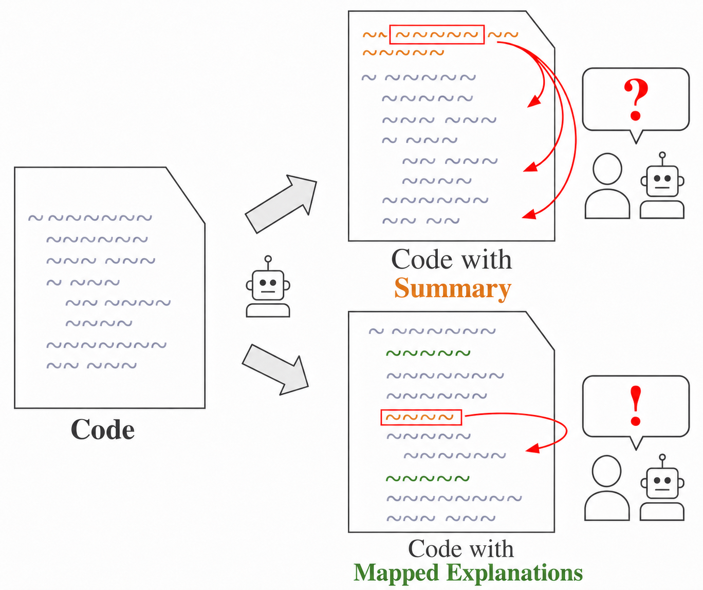
Goal
Build a code assistant that generates code and explanations aligned with the code.
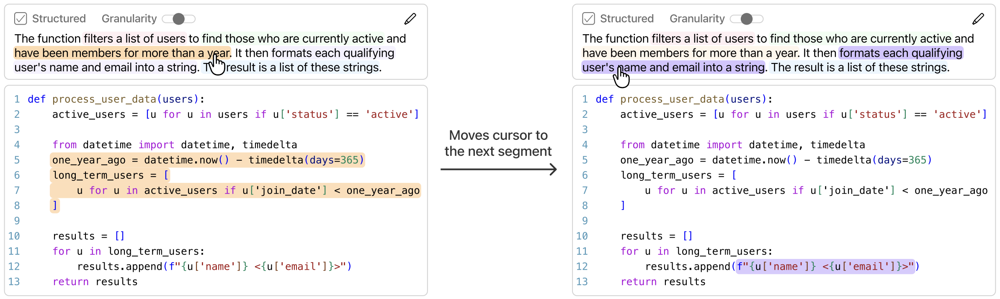
IntelliJ Plugin's High-level architecture
Plugin Modes
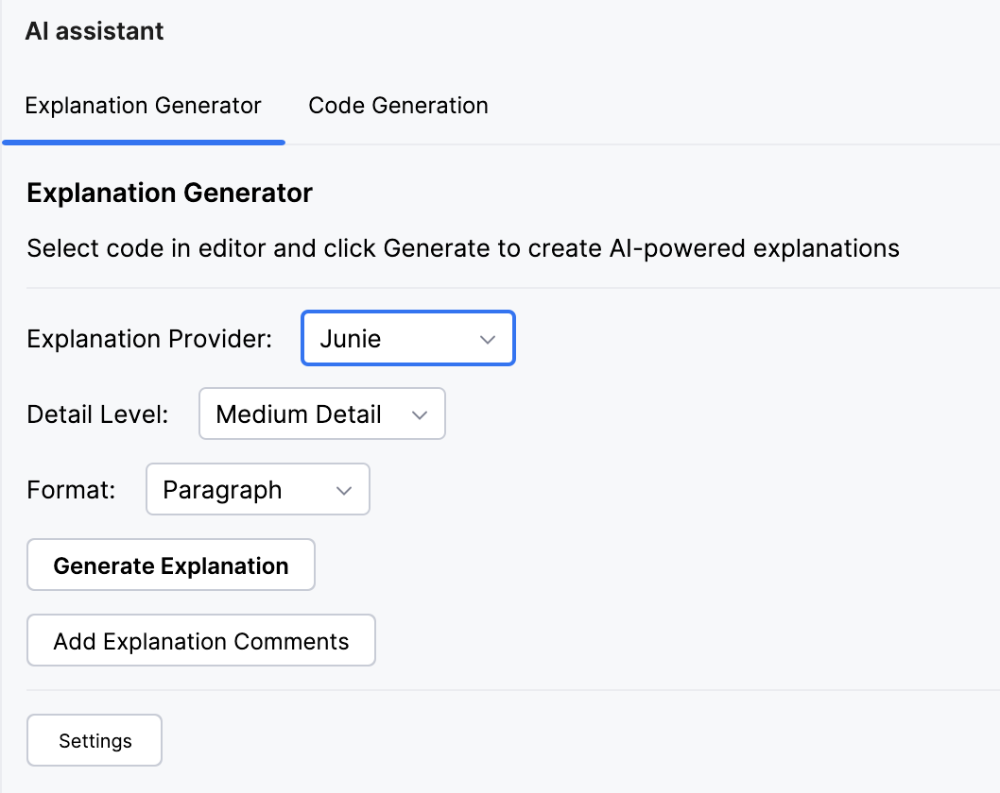
Explanation Generator
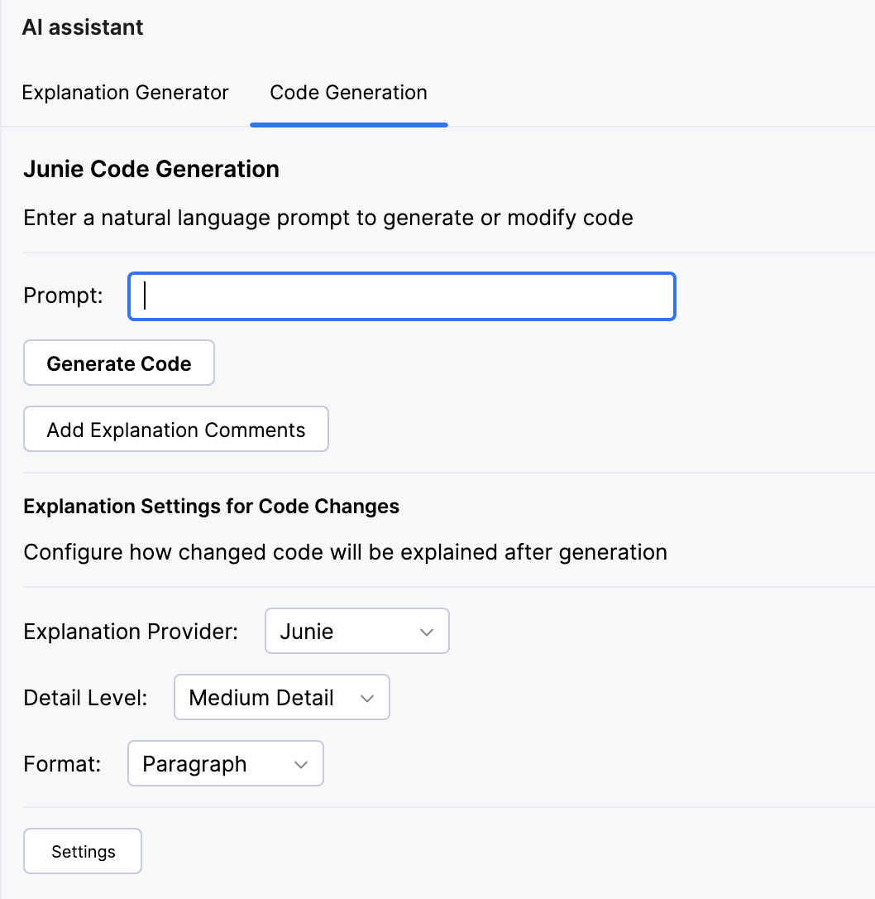
Code Generation
OpenAI Model Selection
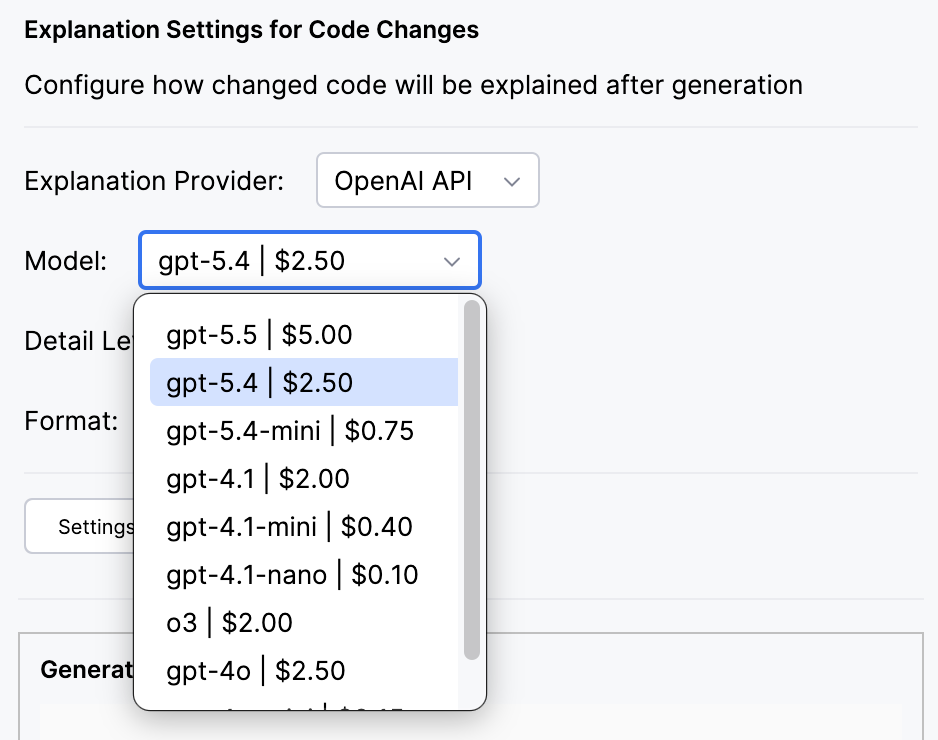
Custom Explanation Style
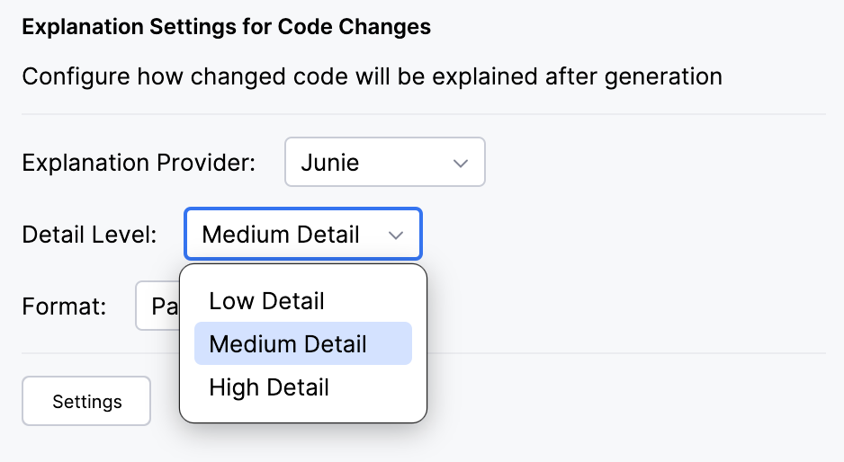
Detail level
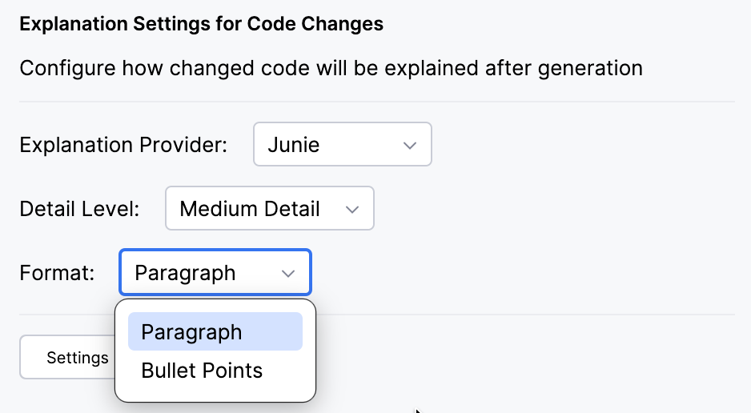
Format
Mapping: Paragraph
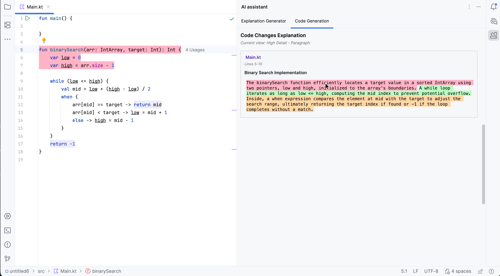
Mapping: Paragraph
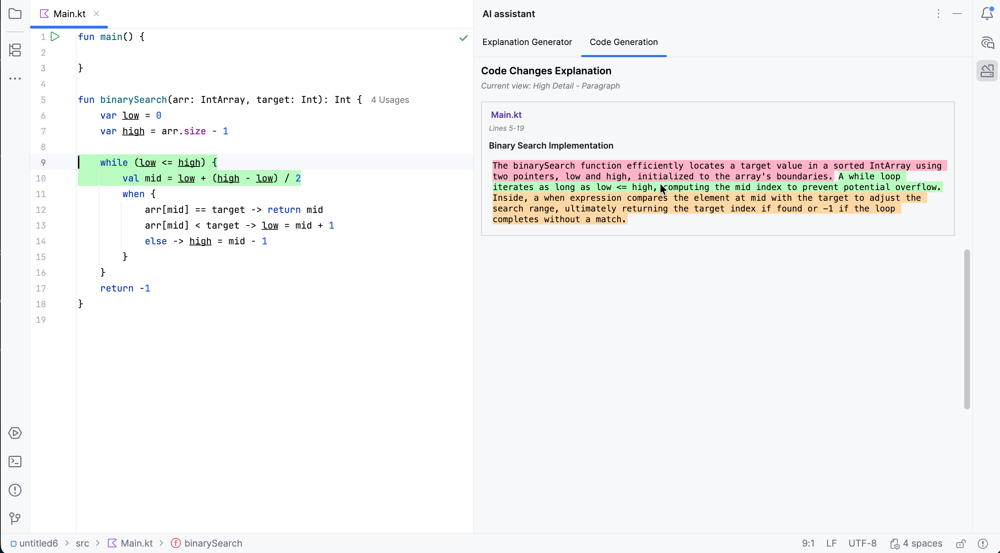
Mapping: Paragraph
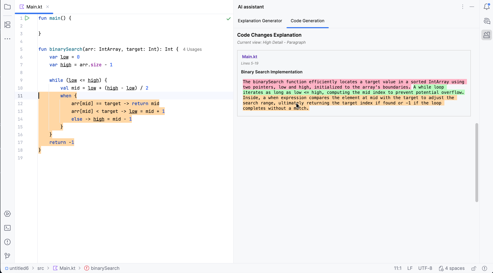
Mapping: Bullet Points
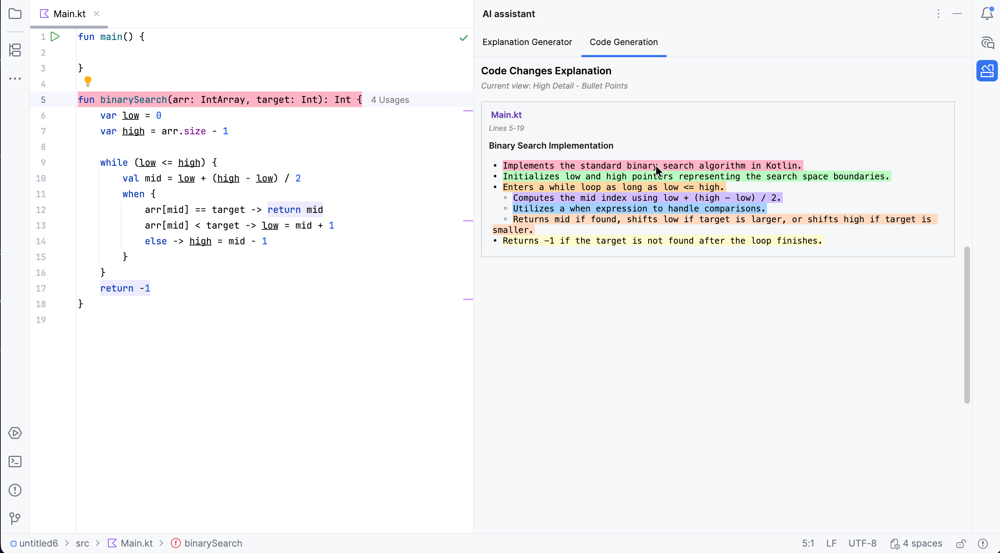
Mapping: Bullet Points
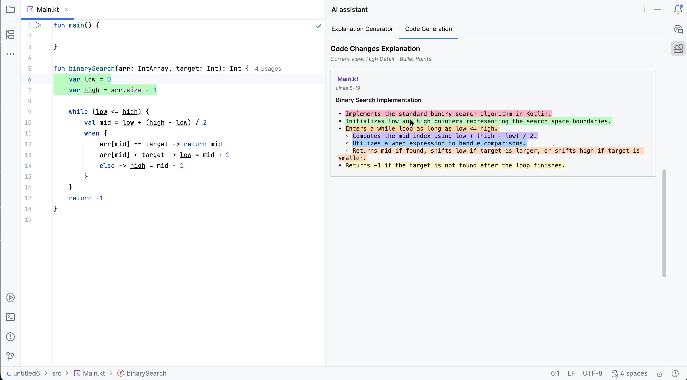
Mapping: Bullet Points
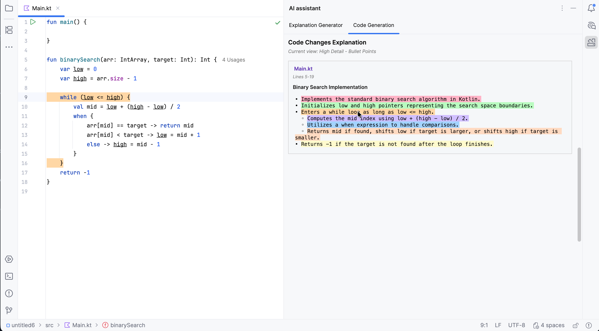
Research Hypotheses
H1. The system can generate explanations that are close to human-written explanations in clarity, structure, and grounding in the actual code.
H2. Adding grounded explanations to the repository can improve the coding agent's repair performance without introducing regressions.
labml.ai Reference Dataset
The dataset contains educational machine-learning code with human-written explanations already mapped to the code regions they describe.
Code fragment
for t in range(seq_len):i, f, g, o = gates[t].chunk(4)c = f * c + i * gh = o * tanh(c)
mapped
->
Human explanation
Iterates through the sequence one timestep at a time.
Splits the recurrent layer output into LSTM gates.
Updates cell and hidden state using gated memory.
LLM-as-a-Judge Evaluation
The judge compares generated explanations with the human-written reference. The evaluator model is OpenAI o3.
Compare the generated explanation components against the reference components.
Evaluate whether the generated explanation:
- covers the same code behavior
- is correct and clear
- maps to the same code regions
Return a score from 0.0 to 1.0.
LLM-as-a-Judge Results
Provider
Method
Price / 1M input tokens
Mean
Median
Min
Max
Avg. generated components
OpenAI
gpt-4o-mini
$0.15
0.416
0.500
0.250
0.550
10.2
gpt-4.1-mini
$0.40
0.696
0.780
0.500
0.830
19.6
gpt-4.1
$2.00
0.786
0.800
0.650
0.850
16.6
Junie
Junie (gemini-3.1-flash-lite)
-
0.752
0.780
0.650
0.800
8.4
H1 confirmed: generated explanations are close to the human-written reference. Reference explanations contain 25.4 components on average.